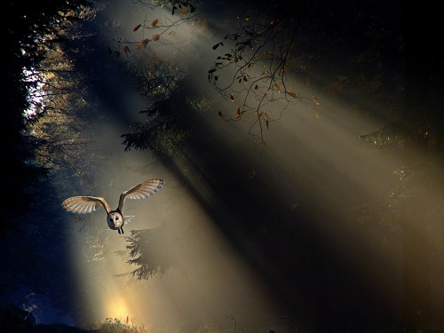
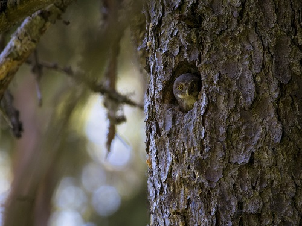
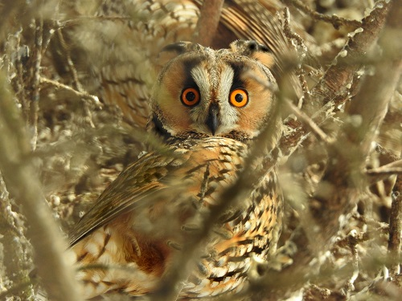

... tajemniczy ... cichy lot przecinający ciemność nocy ... do dziś, często stępiony i prześladowany przez człowieka z powodu złej sławy, do której zostali przypisani w legendach i przesądach. Z drugiej strony od wieków jest przedstawiany jako symbol mądrości i wiedzy. Sowy, ze względu na ich skryte i zasadniczo nocne życie, są słabo poznane, a nasza wiedza na temat sów w społeczeństwie jest bardzo powierzchowna.
Owls
The biggest owls

Trudno oszacować rzeczywistą sytuację sów na terenie Polski, ze względu na mała liczbę inwentaryzowanych pod ich kątem powierzchni. Niedużo wiemy również na temat tendencji liczebnościowych poszczególnych gatunków. Nieliczne, istniejące dane mówią o niepokojąco niskim w ostatnich latach poziomie ich reprodukcji. Jedną z głównych przyczyn spadku liczebności sów w Polsce jest zmiana warunków siedliskowych. Degradacja lasów, intensywna gospodarka leśna i przede wszystkim wyrąb starych drzewostanów, martwych i żywych drzew dziuplastych, zmniejsza liczbę schronień dla sów, ich miejsc lęgowych i spiżarni. Również ciągła presja ze strony człowieka zmniejsza ich liczebność

Równowaga między ofiarą a drapieżcą w przyrodzie podlega ciągłym wahaniom, dodatkowo potęgowanym przez znaczną presję człowieka. Również chroniąc jakiś gatunek lub grupę gatunków, możemy doprowadzić do zachwiania tej zwykle dynamicznej równowagi. Powiązania te są bardzo skomplikowane: np. chroniąc puchacza możemy szkodzić lęgom sokoła wędrownego czy bielika, chroniona uszatka błotna może powodować straty w lęgach równie cennych z punktu widzenia ochrony przyrody błotniaków i na odwrót.Czasami ochrona wymaga kompleksowego podejścia, jednoczesnego stosowania dwu lub więcej form jak np. w przypadku płomykówki, gdzie oprócz wieszania skrzyń lęgowych nie mniej ważne jest budowanie świadomości społecznej.

Silnie osiadłe, stacjonarne sowy takie jak puchacz, puszczyk zwyczajny i uralski, przebywają w ciągu całego roku na niewielkim obszarze. Młode jednak zmuszone są do poszukiwania własnych terytoriów, dlatego również u nich obserwuje się przemieszczanie, nierzadko na znaczne odległości. Nazywamy to dyspersją polęgową, która zwyczajowo nie posiada charakteru kierunkowości, stąd pojawy młodych sów w tym czasie możemy notować dosłownie wszędzie. Rozpoczyna się ona już w jesieni i ma bezpośredni związek z tzw. aktywnością jesienną sów, gdy rodzice przeganiają swoje młode zmuszając je do życia na własną rękę. Dawniej nagłą aktywność głosową sów w jesieni wiązano z wczesnym zajmowaniem przez nie terytoriów, które miały być konsekwentnie bronione do chwili rozpoczęcia wiosennych toków.